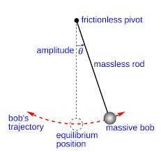
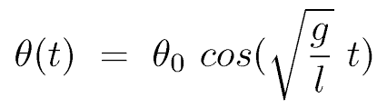
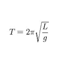
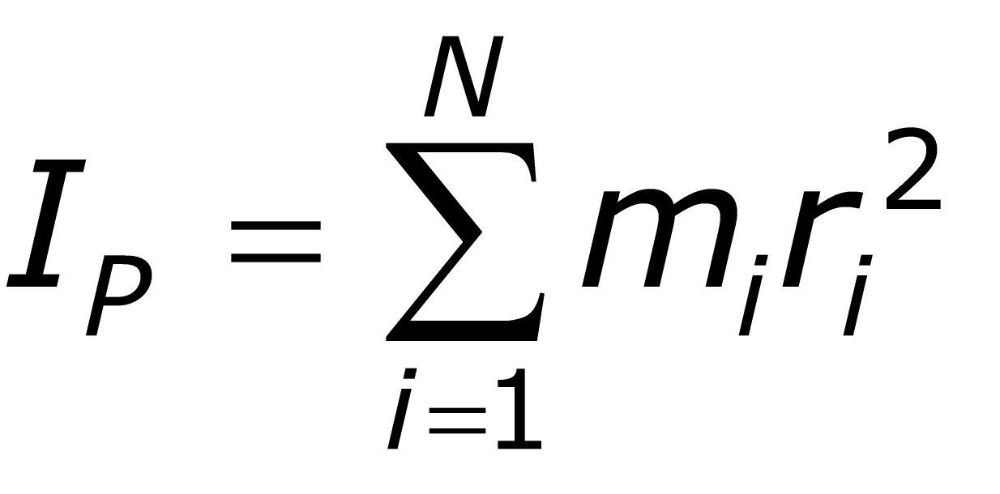

In this model we would like to show the relationship between harmonic motion and the mathematical equations that sustain it. At the same time, we would like to show the physical principles that are hidden behind these equations in an interracial way by a model that can be visualized. At the bottom of the page, after a short explanation you can experiment with yourself.
A pendulum is a mass hung from a stationary point in a way that allows it to swing freely back and forth. A simple pendulum is one where we treat the mass as a mass point that is equally concentrated, and the string from which it hangs is of negligible mass. Simple pendulums are interesting from a physics perspective because they are an example of simple harmonic motion.
Simple harmonic motion is any periodic motion where a restoring force is applied that is proportional to the displacement and in the opposite direction of that displacement. Or in other words, the more you pull it one way, the more it wants to return to the middle. This is easy to imagine with a spring because you feel the increased tug as you stretch it more and more. But what about a pendulum? Well, when you lift a pendulum to one side, the force of gravity wants to pull it back down, and the tension in the string wants to pull it left (or right). These combined forces work together to pull it back towards the middle (the equilibrium position). Ultimately, upon reaching the middle, the pendulum's velocity has increased, so it continues past the equilibrium position and off to the other side. This pattern then continues.

We are talking about a simple pendulum which means that the mass is specific and the force that returns proportional to the pendulum distance from the point of equality.
The equation of simple harmonic motion is actually:

We would like to examine the parameters of the equation in order to understand its meaning. Let's look at the parameter T, what affects the cycle time of the pendulum movement? It can be assumed that the mass of the pendulum affects cycle time, as increasing the mass may affect the desire of the mass to remain in place. That is, you need to take longer time to complete a traffic cycle. On the other hand, if we increase the mass, the gravitational force will increase as well. As a result, the force responsible for pulling the thread to the point of equality will increase, and indeed we are talking about forces that will balance each other. Try to change the mass in the model and see that there is no change in pendulum motion.
What can still affect the pendulum's cycle time? Well, the cycle time of the pendulum is calculated by the equation:  It can be assumed from the equation that increasing the length of the wire will increase the cycle time, and indeed try to increase the length of the wire in the model and observe the time it takes the pendulum to complete the cycle.
But why? Well, why the length of the thread affects the time of the pendulum cycle is related to inertia, or more specifically the equation:

That is, increasing L increases the torque of inertia, which means how hard it is to accelerate at some angular velocity any mass. This means that the larger the torque the greater the torque, and the more mass it takes to complete the cycle time.
Try increasing the cycle time in the model and see the result.